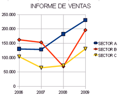
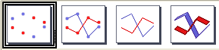
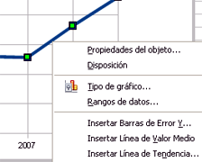
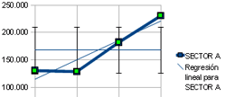
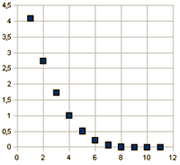
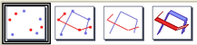

Hojas de cálculo
5.4.4. Gráficos de línea y de dispersión
Importante
Los gráficos de línea se utilizan para mostrar la tendencia de varias series de datos en intervalos iguales. Los datos de categoría se distribuyen en el eje X y los datos de valor se distribuyen en el eje Y.

Este tipo de gráficos se utiliza especialmente cuando las divisiones son espacios de tiempo iguales, por ejemplo, meses, trimestres o años. Cuando los valores son muy grandes, se utilizan los gráficos de dispersión.
En el siguiente ejemplo, se observa la división temporal de valores en el eje X y los datos de valor en el eje Y.
En este tipo de gráficos podemos elegir las siguientes opciones:
Sólo puntos - Puntos y líneas - Sólo líneas - Líneas 3D

Comprueba lo aprendido
En la imagen anterior puedes ver el gráfico de líneas que representa el informe de ventas realizado en la hoja de cálculo del apartado anterior. Contesta a las siguientes cuestiones relativas a este gráfico.
Retroalimentación
Falso
La opción utilizada es líneas y puntos.
Retroalimentación
Verdadero
En el eje Y se representan los valores.
Retroalimentación
Falso
Las series de datos del gráfico son 3: SECTOR A, SECTOR B y SECTOR C.
Para saber más

Puesto que los gráficos de líneas muestran una tendencia, en muchos casos es necesario conocer también la línea de valor medio y la línea de tendencia, incluso la desviación del error. Estos datos se pueden insertar para cada una de las series editando el gráfico.

Importante
Los gráficos de dispersión XY representan una serie de datos, una lista de valores en el eje X y otra en el eje Y. El nombre de la serie se asocia a los valores del eje Y, éste se muestra en la leyenda.

Este tipo de gráficos se suele utilizar en los siguientes casos:
- Para dibujar el gráfico de una función.
- Para generar el parámetro de una curva, por ejemplo una espiral.
- Para explorar la asociación estadística de la variable cuantitativa.
En los gráficos de dispersión podemos elegir las siguientes opciones:
Sólo puntos - Puntos y líneas - Sólo líneas - Líneas 3D

Ejercicio resuelto
Aunque existen programas específicos para representar funciones matemáticas, los programas de hojas de cálculo también son muy útiles en este campo ya que mediante los gráficos de dispersión (XY).
En este ejercicio, vamos a representar la función y=x2+x+1, cuya representación es una parábola.
En este caso, hemos elegido las siguientes opciones para realizar el gráfico:
- La opción elegida es el gráfico de línea.
- Las líneas de los ejes X e Y se han marcado en color negro.
- La línea que representa la serie de datos se ha marcado en color amarillo.
Obra publicada con Licencia Creative Commons Reconocimiento No comercial Compartir igual 4.0